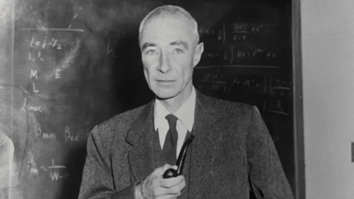

Oppenheimer desenvolveu interesse pela matemática e ciências naturais desde jovem. Ele frequentou a Escola Ethical Culture, uma escola progressista em Nova Iorque, onde teve acesso a uma educação ampla e rigorosa. Seu talento e dedicação foram notados pelos professores, e ele se destacou em vários campos acadêmicos. Em 1922, Oppenheimer ingressou na Universidade de Harvard, onde inicialmente estudou química e continuou a se destacar academicamente. No entanto, seu interesse foi gradualmente desviado para a física teórica, e ele mudou seu foco para esse campo. Sob a orientação do físico Percy Bridgman, Oppenheimer realizou pesquisas em espectroscopia e fenômenos quânticos.Após concluir seu bacharelado em 1925, Oppenheimer viajou para a Europa para continuar seus estudos em física. Ele passou um período na Universidade de Cambridge, onde trabalhou com o famoso físico experimental Ernest Rutherford. Em seguida, mudou-se para a Universidade de Göttingen, na Alemanha, um importante centro de física teórica na época, onde estudou com nomes como Max Born e Werner Heisenberg. Em 1927, Oppenheimer concluiu seu doutorado na Universidade de Göttingen, sob a supervisão de Max Born. Sua tese tratava de temas relacionados à mecânica quântica, um campo emergente na época que estava revolucionando a física.

O Projeto Manhattan começou em 1939, quando os cientistas Albert Einstein e Leo Szilard alertaram o presidente dos Estados Unidos, Franklin D. Roosevelt, sobre a possibilidade de a Alemanha nazista estar trabalhando no desenvolvimento de armas nucleares. Preocupados com a possibilidade de a Alemanha criar uma arma devastadora, os Estados Unidos iniciaram um programa secreto para pesquisar e desenvolver sua própria bomba atômica. O projeto foi oficialmente autorizado em 1942 e foi liderado pelo Corpo de Engenheiros do Exército dos Estados Unidos. O laboratório principal foi estabelecido em Los Alamos, Novo México, sob a direção do físico teórico J. Robert Oppenheimer. Oppenheimer era um cientista proeminente e carismático, conhecido por sua mente brilhante e liderança inspiradora. Ele foi escolhido para liderar o laboratório devido à sua vasta experiência em física e sua capacidade de reunir e liderar uma equipe talentosa de cientistas..

Após o sucesso do Projeto Manhattan e o uso das bombas atômicas em Hiroshima e Nagasaki, Oppenheimer foi amplamente reconhecido e elogiado por sua liderança no projeto. Ele recebeu várias honrarias e prêmios por suas contribuições para a ciência e a guerra. Em 1947, Oppenheimer foi nomeado presidente do Comitê Consultivo de Energia Atômica (ACEA) dos Estados Unidos, um órgão importante responsável por aconselhar o governo sobre questões relacionadas à energia atômica e ao desenvolvimento de armas nucleares. No final da década de 1940 e início da década de 1950, surgiram preocupações sobre a segurança nacional dos Estados Unidos relacionadas à espionagem e à possível disseminação de informações nucleares. Oppenheimer estava entre os cientistas e funcionários do governo que foram investigados pelo FBI e pelo Comitê de Atividades Antiamericanas da Câmara dos Representantes dos EUA. Embora não tenha sido encontrado culpado de qualquer crime, surgiram questões sobre suas simpatias políticas passadas e seu envolvimento com membros do Partido Comunista.

A física nuclear é um ramo da física que estuda as propriedades e interações dos núcleos atômicos, que são as partes centrais dos átomos. Ela abrange uma ampla gama de fenômenos, desde a estrutura e a estabilidade dos núcleos até as reações nucleares que liberam ou absorvem energia. Os núcleos atômicos são compostos por prótons e nêutrons, conhecidos como nucleons. Prótons são partículas com carga elétrica positiva, enquanto os nêutrons não possuem carga elétrica (são eletricamente neutros). A estrutura nuclear é descrita pelo Modelo de Shell Nuclear, semelhante ao Modelo de Shell Eletrônico para os elétrons ao redor do núcleo. O modelo de shell descreve os nucleons organizados em camadas energéticas, que determinam a estabilidade do núcleo.

A energia de ligação nuclear é a energia necessária para separar todos os nucleons de um núcleo atômico e é uma medida da estabilidade do núcleo. Ela é calculada pela fórmula: Energia de Ligação (BE) = [Z * m_p + (A - Z) * m_n - m_núcleo] * c^2 Onde: Z é o número de prótons no núcleo (número atômico). A é o número total de nucleons no núcleo (número de massa). m_p é a massa de um próton. m_n é a massa de um nêutron. m_núcleo é a massa do núcleo. c é a velocidade da luz no vácuo (aproximadamente 3x10^8 m/s). c^2 é o quadrado da velocidade da luz. Reações Nucleares: As reações nucleares envolvem a transformação de núcleos atômicos, geralmente por colisões com partículas ou outras reações nucleares. Essas reações podem liberar ou absorver energia. A equação fundamental para a conservação de energia em reações nucleares é a seguinte: Energia Cinética Inicial + Energia Potencial Inicial = Energia Cinética Final + Energia Potencial Final + Energia Liberada (ou absorvida)

Me chamo Matheus Gabriel, sou entusiasta e apixonado por programação e tecnologia, esse daqui é um portifólio criado em dois dias para uma vaga de estágio no Líber (Laboratório de Tecnologia da UFPE). Meu primeiro portifólio usando javascript, booststrap, html e css, sem contar que eu levantei o site em dois dias e com 30 horas (contadas) de trabalho. Ainda não está perfeito, mas a parte mais "trabalhosa" já foi feita, espero que gostem.